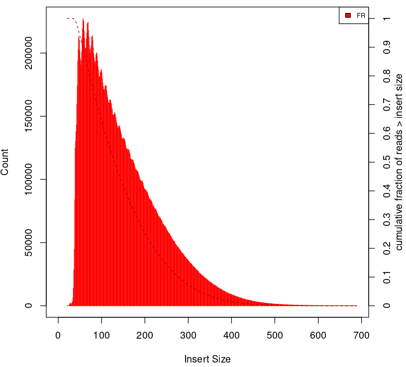
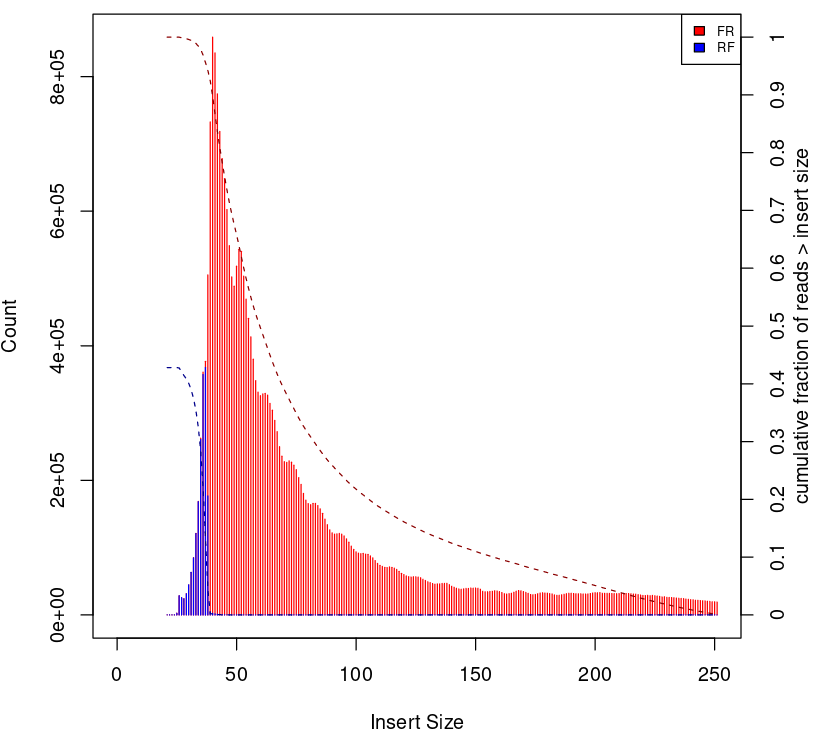
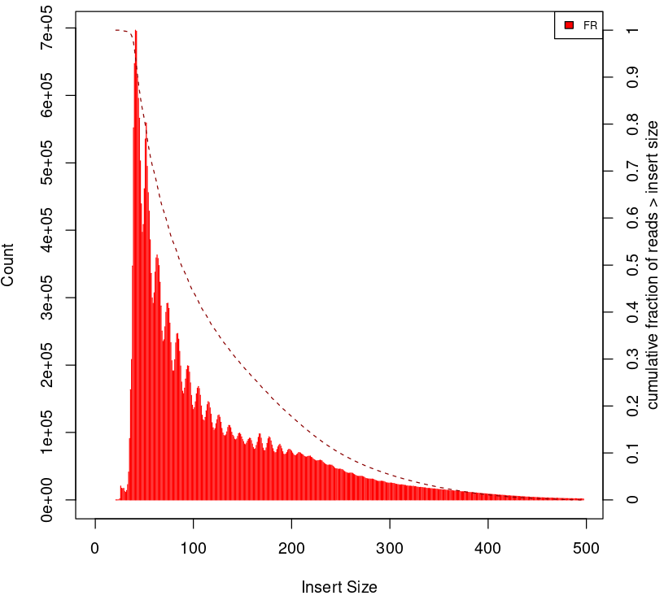
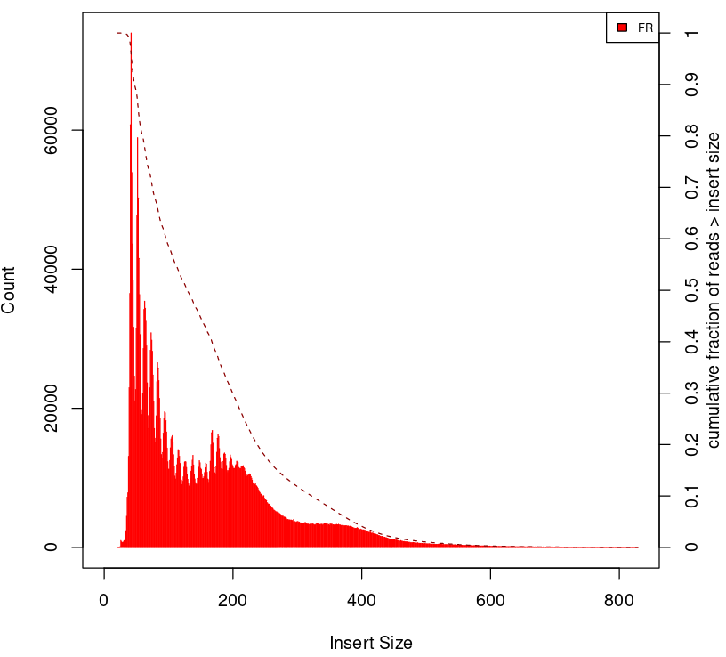
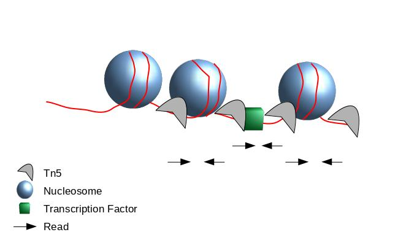
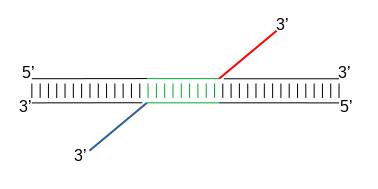
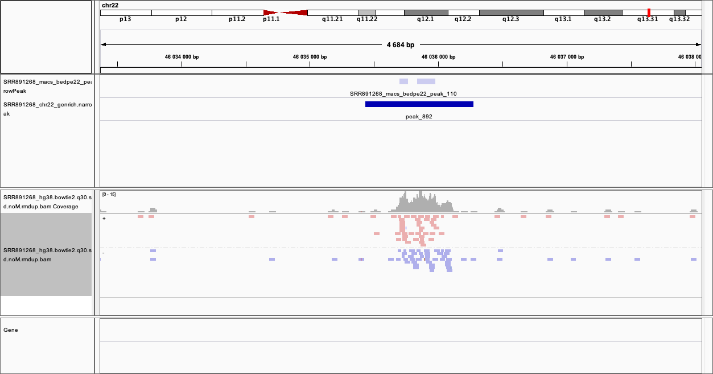

ATAC-seq¶
ATAC-seq (Assay for Transposase-Accessible Chromatin with high-throughput sequencing) is a method for determining chromatin accessibility across the genome. It utilizes a hyperactive Tn5 transposase to insert sequencing adapters into open chromatin regions. High-throughput sequencing then yields reads that indicate these regions of increased accessibility.

|
The sample processing workflow is similar to that of ChIP-seq. There are some small changes, however, and we’ll discuss them here.
First of all, the sample should be sequenced using the paired end (PE) protocol. Single end sequencing for ATAC-seq is strongly discouraged, for reasons mentioned below.
Data¶
In this tutorial we will use data from the study of Buenrostro et al. 2013, the first paper on the ATAC-seq method. The data is from a human cell line of purified CD4+ T cells. The original dataset had 2 x 200 million reads and would be too big to process in a training session, so the original dataset was downsampled to 200,000 randomly selected reads. Additionally, about 200,000 reads pairs that will map to chromosome 22 were included to have a good profile on this chromosome, similar to what you might get with a typical ATAC-seq sample.
Prior to aligning reads to the reference genome, the reads must be properly trimmed off adapters - because we will allow “dovetailing” (with the mates seemingly extending “past” each other) of read pairs during alignment:
<--------------------Mate 1-----------------------
AGCTTCAACATCGAATACGCCGCAGGCCCCTTCGCCCTATTCTTCATAGC
CTTCAACATCGAATACGCCGCAGGCCCCTTCGCCCTATTCTTCATAGCCT
----------------------Mate 2--------------------->
Read alignment can be performed using any aligner which performs global i.e. end-to-end alignment, such as bwa-mem, bowtie, bowtie2 (newer versions). In this tutorial we used bowtie2 for read mapping, for details see the header of bam file. We start from the bam file which contains subset reads aligned to hg38 assembly.
Alignment Processing and QC¶
First, you need to link the bam file in your working directory. This file has been filtered off alignments with low quality score and contains only properly paired read pairs. You can refer to bowtie2 manual for details. The file is also sorted and inexed.
mkdir -p atacseq/bam
cd atacseq/bam
ln -s /sw/courses/epigenomics/ATACseq_bulk/results/bam/SRR891268_hg38.bowtie2.q30.sorted.bam .
ln -s /sw/courses/epigenomics/ATACseq_bulk/results/bam/SRR891268_hg38.bowtie2.q30.sorted.bam.bai .
First, we would like to know how many fragments mapped to chrM, as reads derived from mitochondrial DNA represent noise in ATAC-seq datasets and can substantially inflate the background level in peak identification.
The output is TAB-delimited with each line consisting of reference sequence name, sequence length, # mapped read-segments and # unmapped read-segments.
samtools idxstats SRR891268_hg38.bowtie2.q30.sorted.bam >SRR891268.idxstats.txt
#total fragments
awk '{sum += $3} END {print sum}' SRR891268.idxstats.txt
#chrM fragments
awk '$1 ~ /chrM/ {print $3}' SRR891268.idxstats.txt
> 165586/437490
[1] 0.3784909
You can see that almost 40% of the fragments mapped to mitochondrial DNA. This is often the case in ATAC-seq experiments (depending on the protocol) and should be taken into account when planning the experiment. We remove these reads in the next step.
The alignment processing steps are similar to ChIP-seq data processing. In this example we do not filter out reads mapping to blaclisted regions (found in Encode accession ENCFF356LFX), this step may be necessary, depending on the dataset.
samtools view -h SRR891268_hg38.bowtie2.q30.sorted.bam | awk '($3 != "chrM")' | samtools view -Shbo SRR891268_hg38.bowtie2.q30.sorted.noM.bam -
samtools index SRR891268_hg38.bowtie2.q30.sorted.noM.bam
samtools stats SRR891268_hg38.bowtie2.q30.sorted.noM.bam >SRR891268.stats.txt
The last command collects statistics from BAM files and outputs in a text format. To see the summary:
`grep ^SN SRR891268.stats.txt | cut -f 2-`
# the interesting part
insert size average: 231.6
insert size standard deviation: 188.8
You will remove duplicated reads (which likely are PCR duplicates) and collect detailed insert size metrics.
module load picard/2.23.4
java -Xmx64G -jar $PICARD_HOME/picard.jar MarkDuplicates -I SRR891268_hg38.bowtie2.q30.sorted.noM.bam \
-O SRR891268_hg38.bowtie2.q30.sorted.noM.rmdup.bam -M dedup_metrics.txt \
-VALIDATION_STRINGENCY LENIENT -REMOVE_DUPLICATES true -ASSUME_SORTED true
java -Xmx64G -jar $PICARD_HOME/picard.jar CollectInsertSizeMetrics \
-I SRR891268_hg38.bowtie2.q30.sorted.noM.rmdup.bam -O SRR891268_insert_size_metrics.txt \
-H SRR891268_insert_size_histogram.pdf -M 0.5
View the resulting histogram of insert sizes SRR891268_insert_size_histogram.pdf. Generating this important QC plot is only possible for PE libraries. Could you guess what the peaks at approximately 50bp, 200bp, 400bp and 600bp correspond to?
To give some context compare to plots on Figure 2.
Naked DNA |
Failed ATAC-seq |
Noisy ATAC-seq |
Successful ATAC-seq |
|---|---|---|---|
|  |  |  |  |
{kind=link}
{kind=link}
{kind=link}
{kind=link}
Peak Calling¶
We have now finished the data preprocessing. Next, to find regions corresponding to potential open chromatin regions, we want to identify regions where reads have piled up (peaks) greater than the background read coverage.
The tools which are currently used are Genrich and MACS2. Genrich has a mode dedicated to ATAC-Seq but is still not published, so both are presented here. The differences between these two are discussed here.
It is very important at this point that we center the reads on the 5’ extremity (read start site) as this is where Tn5 cuts. You want your peaks around the nucleosomes and not directly on the nucleosome. However, if we only assess the coverage of the start sites of the reads, the data would be too sparse and it would be impossible to call peaks. Thus, we will extend the start sites of the reads by 100bp (50 bp in each direction) to assess coverage.
|  |
{kind=link}
When Tn5 cuts an accessible chromatin locus it inserts adapters separated by 9bp, see Figure 4. This means that to have the read start site reflect the centre of where Tn5 bound, the reads on the positive strand should be shifted 4 bp to the right and reads on the negative strand should be shifted 5 bp to the left as in Buenrostro et al. 2013.
|  |
{kind=link}
Genrich¶
Genrich can apply the read shifts when ATAC-seq mode -j is selected.
mkdir ../genrich
cd ../genrich
# we link the input bam file
ln -s /sw/courses/epigenomics/ATACseq_bulk/results/bam/SRR891268_hg38.bowtie2.q30.sorted.noM.rmdup.bam
# in case not already loaded
module load bioinfo-tools
module load samtools/1.8
# sort the bam file by read name
samtools sort -n -o SRR891268_hg38.nsort.bam -T sort.tmp SRR891268_hg38.bowtie2.q30.sorted.noM.rmdup.bam
/sw/courses/epigenomics/ATACseq_bulk/software/Genrich/Genrich -j -t SRR891268_hg38.nsort.bam -o SRR891268_genrich.narrowPeak
The output file produced by Genrich is in ENCODE narrowPeak format, listing the genomic coordinates of each peak called and various statistics.
chr start end name score strand signalValue pValue qValue peak
signalValue - Measurement of overall (usually, average) enrichment for the region.
pValue - Measurement of statistical significance (-log10). Use -1 if no pValue is assigned.
qValue - Measurement of statistical significance using false discovery rate (-log10). Use -1 if no qValue is assigned.
How many peaks were detected?
wc -l SRR891268_genrich.narrowPeak
130617 SRR891268_genrich.narrowPeak
Unfortunately, Genrich does not work very well with our small training dataset (every covered region is called a peak). This is because most of the data is on chr22 whereas the background model was built on the whole genome (Genrich consideres length of all reference seqences included in bam header).
Let’s try again with properly prepared bam file, i.e such that the header contains only the chromosome of interest (chr22).
# we need indexed bam
samtools index SRR891268_hg38.bowtie2.q30.sorted.noM.rmdup.bam
#subset bam and change header
samtools view -h SRR891268_hg38.bowtie2.q30.sorted.noM.rmdup.bam chr22 | grep -P "@HD|@PG|chr22" | samtools view -Shbo SRR891268_hg38.chr22_rh.bam
# sort by read name
samtools sort -n -o SRR891268_hg38.nsort.chr22_rh.bam -T sort.tmp SRR891268_hg38.chr22_rh.bam
# call peaks
/sw/courses/epigenomics/ATACseq_bulk/software/Genrich/Genrich -j -t SRR891268_hg38.nsort.chr22_rh.bam -o SRR891268_chr22_genrich.narrowPeak
#how many peaks
wc -l SRR891268_chr22_genrich.narrowPeak
1017 SRR891268_chr22_genrich.narrowPeak
MACS¶
We need to convert BAM file to BEDPE to correctly apply read shifts to center fragments on the insertion sites.
mkdir ../macs
cd ../macs
module load BEDTools/2.25.0
bedtools bamtobed -bedpe -i ../genrich/SRR891268_hg38.nsort.chr22_rh.bam >SRR891268_22_pe.bed
module load MACS/2.2.6
macs2 callpeak -t SRR891268_22_pe.bed -n SRR891268_macs_chr22_bedpe -f BEDPE -g 50818468 --nomodel --extsize 100 --shift -50 --call-summits
We chose genome size -g 50818468 - because it is the length of chromosome 22, which is the only one included in the input file.
Please note that we selected --extsize 100 to match the behaviour of Genrich. Normally --extsize 200 would be selected. --shift needs to be minus half of the size of --extsize to be centered on the 5’, so normally -100. --shift -100 --extsize 200 will amplify the cutting sites’ enrichment from ATAC-seq data. So in the end, the peak is where Tn5 transposase likes to attack.
How many peaks were detected?
wc -l SRR891268_macs_chr22_bedpe_peaks.narrowPeak
126 SRR891268_macs_chr22_bedpe_peaks.narrowPeak
Comparing results of MACS and Genrich¶
How many peaks actually overlap?
cd ..
bedtools intersect -a macs/SRR891268_macs_chr22_bedpe_peaks.narrowPeak -b genrich/SRR891268_chr22_genrich.narrowPeak -f 0.50 -r >peaks_common.bed
wc -l peaks_common.bed
125 peaks_common.bed
Inspetion of the peak tracks in IGV reveals small differences in peaks called by MACS and Genrich. The very shallow signal in this example does not produce peaks of good quality by neither method. Usually MACS tends to detect many shorter peaks whereas Genrich tends to merge these shorter peaks into longer intervals.
Below is zoom on chr22:46,033,366-46,038,084 one of the locations where both MACS and Genrich found a peak.
|  |
{kind=link}
(Tutorial modified from https://training.galaxyproject.org/topics/epigenetics/tutorials/atac-seq/tutorial.html)